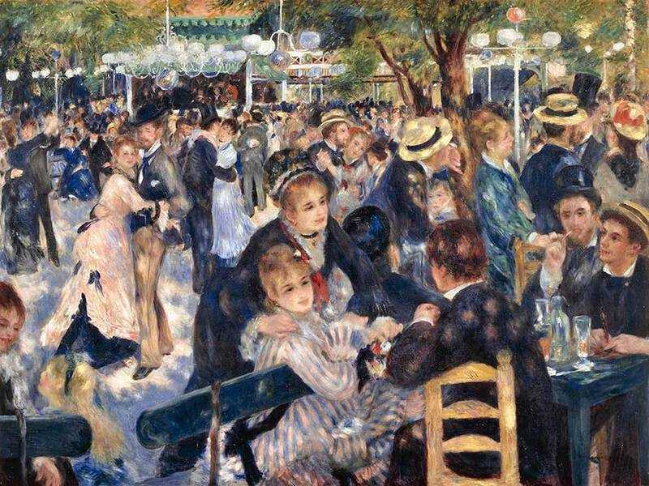

I love Art
Posted on by Eric Shen
Art has always been a profound source of inspiration for me. Whether it’s the soft, dreamlike brushstrokes of Renoir or the bold, abstract shapes of Picasso, each artist brings something unique that resonates with me in different ways. Renoir’s work, with its rich colors and lively depictions of everyday life, makes me appreciate the beauty in the ordinary. His attention to light and texture pulls me into a world where fleeting moments are captured forever. On the other hand, Picasso’s daring use of form and his constant reinvention of style challenge me to think beyond conventional boundaries. His work is a reminder that creativity has no limits and that art is a space where experimentation thrives.
Leonardo da Vinci and Vincent van Gogh, though from different eras, have both influenced my love for art in equally profound ways. Da Vinci’s incredible mastery of detail and his ability to blend science with art make his works feel almost otherworldly. Whether it’s the enigmatic smile of the *Mona Lisa* or the intricate anatomy of *Vitruvian Man*, da Vinci’s creations inspire me to strive for excellence and to always be curious about the world. Van Gogh, on the other hand, speaks to my emotions in a raw, visceral way. His vibrant colors and intense brushstrokes, particularly in works like *Starry Night*, remind me of the power art has to convey emotion and transform suffering into beauty. These artists, in their own unique styles, have deeply inspired my creative journey, fueling my passion for art and its endless possibilities.